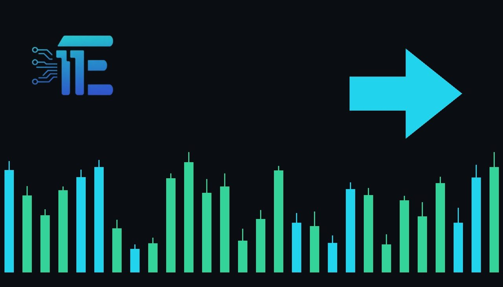

Bargain Buyers Defend Gold Above $4,000 Prior to PCEអ្នកទិញតាមថ្លៃថោកជួយទប់មាសឱ្យនៅពីលើ 4,000 ដុល្លារមុនទិន្នន័យ PCE
XAU/USD impact: ◆ Mixedផលប៉ះពាល់លើ XAU/USD: ◆ ចម្រុះ

Gold prices held above $4,000 an ounce as bargain hunters emerged ahead of the Federal Reserve policy decision and upcoming PCE data. The outcome of these key events will directly influence US dollar strength and interest rate expectations that drive XAU/USD.
តម្លៃមាសបានរក្សាតម្លៃនៅពីលើ 4,000 ដុល្លារក្នុងមួយអោន ខណៈដែលអ្នកទិញតាមថ្លៃថោកបានចូលមកមុនការសម្រេចចិត្តរបស់ Fed និងទិន្នន័យ PCE។ លទ្ធផលនៃព្រឹត្តិការណ៍ទាំងនេះនឹងជះឥទ្ធិពលផ្ទាល់ដល់កម្លាំងប្រាក់ដុល្លារអាមេរិក និងការរំពឹងទុកអត្រាការប្រាក់ដែលជំរុញ XAU/USD។
Gold prices managed to hold above $4,000 an ounce on Wednesday as bargain buyers entered the market. The stabilization came as market participants prepared for the upcoming Federal Reserve interest-rate decision and closely monitored forthcoming PCE data. Alongside monetary policy expectations, investors evaluated a cooling in oil prices, growing appetite for artificial intelligence stocks, and lingering inflation risks.
តម្លៃមាសបានបន្តរក្សាជំហរនៅពីលើកម្រិត 4,000 ដុល្លារក្នុងមួយអោនកាលពីថ្ងៃពុធ ខណៈដែលក្រុមអ្នកទិញតាមថ្លៃថោកបានចូលមកក្នុងទីផ្សារ។ ការរក្សាស្ថិរភាពនេះបានកើតឡើងនៅពេលដែលអ្នកចូលរួមទីផ្សារត្រៀមខ្លួនសម្រាប់សេចក្តីសម្រេចលើអត្រាការប្រាក់របស់ធនាគារកណ្តាល Fed និងតាមដានយ៉ាងយកចិត្តទុកដាក់លើទិន្នន័យ PCE ដែលនឹងចេញផ្សាយខាងមុខ។ ទន្ទឹមនឹងការរំពឹងទុកលើគោលនយោបាយរូបិយវត្ថុ វិនិយោគិនក៏បានវាយតម្លៃលើការធ្លាក់ចុះនៃតម្លៃប្រេង ការកើនឡើងនូវការចាប់អារម្មណ៍លើភាគហ៊ុនបច្ចេកវិទ្យា AI ព្រមទាំងហានិភ័យអតិផរណាដែលនៅតែបន្តកើតមាន។
The path for XAU/USD is steered by how these crosscurrents interact with monetary policy expectations and the US dollar. Anticipation surrounding the Fed decision directly influences interest rate projections and the opportunity cost of holding non-yielding bullion. Meanwhile, the upcoming PCE price gauge serves as a key measure of underlying price pressures, shaping how aggressively central bank policymakers may adjust their policy stance in response to persistent inflation risks.
ទិសដៅសម្រាប់គូជួញដូរ XAU/USD ត្រូវបានកំណត់ដោយរបៀបដែលកត្តាទាំងនេះជះឥទ្ធិពលលើការរំពឹងទុកនៃគោលនយោបាយរូបិយវត្ថុ និងប្រាក់ដុល្លារអាមេរិក។ ការទន្ទឹងរង់ចាំការសម្រេចចិត្តរបស់ Fed ជះឥទ្ធិពលដោយផ្ទាល់លើការព្យាករណ៍អត្រាការប្រាក់ និងការចំណាយលើការកាន់កាប់ទ្រព្យសកម្មដែលមិនផ្តល់ការប្រាក់ដូចជាមាស។ ទន្ទឹមនឹងនេះ សូចនាករថ្លៃទំនិញ PCE ដែលនឹងចេញផ្សាយដើរតួជារង្វាស់ដ៏សំខាន់នៃសម្ពាធតម្លៃ ដែលនឹងកំណត់ថាតើមន្ត្រីធនាគារកណ្តាលនឹងកែសម្រួលជំហរគោលនយោបាយរបស់ពួកគេខ្លាំងកម្រិតណា ដើម្បីឆ្លើយតបទៅនឹងហានិភ័យអតិផរណាដែលនៅតែរ៉ាំរ៉ៃ។
Wider market sentiment is also contributing to the complex environment for precious metals. Declining oil prices help dampen near-term energy-driven headline pressures, while renewed capital flows into artificial intelligence shares show that risk appetite remains strong elsewhere in the financial system. For gold, competition from rallying equities can dilute safe-haven allocations, yet the presence of bargain hunters above $4,000 underscores underlying physical and structural demand whenever prices experience pullbacks.
បរិយាកាសទីផ្សារទូលំទូលាយក៏កំពុងចូលរួមចំណែកបង្កើតស្ថានភាពចម្រុះសម្រាប់លោហៈធាតុមានតម្លៃផងដែរ។ ការធ្លាក់ចុះនៃតម្លៃប្រេងជួយកាត់បន្ថយសម្ពាធតម្លៃថាមពលក្នុងរយៈពេលខ្លី ខណៈដែលលំហូរទុនចូលទៅក្នុងភាគហ៊ុនបញ្ញាសិប្បនិម្មិត AI បង្ហាញថាការចង់ទទួលយកហានិភ័យនៅតែមានកម្រិតខ្ពស់នៅក្នុងប្រព័ន្ធហិរញ្ញវត្ថុ។ សម្រាប់មាស ការប្រកួតប្រជែងពីទីផ្សារភាគហ៊ុនដែលកំពុងឡើងថ្លៃអាចកាត់បន្ថយការបែងចែកទុនសម្រាប់ទ្រព្យសកម្មសុវត្ថិភាព ប៉ុន្តែវត្តមានរបស់អ្នកទិញតាមថ្លៃថោកនៅពីលើ 4,000 ដុល្លារបង្ហាញពីតម្រូវការគាំទ្រនៅពេលដែលតម្លៃជួបការធ្លាក់ចុះ។
For gold to sustain upward momentum, incoming PCE inflation metrics would likely need to validate easing price pressures without triggering sharp US dollar strength, allowing expectations for lower interest rates to reinforce investor demand. Conversely, if persistent inflation concerns prompt the Fed to signal a more restrictive monetary path, higher bond yields and a firmer US dollar could pressure bullion, potentially testing the resolve of bargain buyers defending the $4,000 threshold.
ដើម្បីឱ្យមាសអាចរក្សាសន្ទុះកើនឡើងបាន ទិន្នន័យអតិផរណា PCE ខាងមុខទំនងជាត្រូវបញ្ជាក់ពីការថមថយនៃសម្ពាធតម្លៃដោយមិនបង្កឱ្យមានការឡើងថ្លៃខ្លាំងនៃប្រាក់ដុល្លារអាមេរិកនោះទេ ដែលអាចបើកផ្លូវឱ្យការរំពឹងទុកលើការបញ្ចុះអត្រាការប្រាក់ជួយជំរុញតម្រូវការវិនិយោគិន។ ផ្ទុយទៅវិញ ប្រសិនបើការព្រួយបារម្ភអំពីអតិផរណាដែលនៅតែបន្តជំរុញឱ្យ Fed បង្ហាញជំហររឹតបន្តឹងគោលនយោបាយរូបិយវត្ថុកាន់តែខ្លាំង អត្រាផលប័ត្រសញ្ញាបណ្ណកាន់តែខ្ពស់ និងប្រាក់ដុល្លារអាមេរិកដែលរឹងមាំអាចដាក់សម្ពាធលើមាស ហើយអាចសាកល្បងកម្លាំងរបស់អ្នកទិញដែលកំពុងការពារកម្រិត 4,000 ដុល្លារ។
Moving forward, traders should keep their attention fixed on the Federal Reserve rate announcement and the accompanying policy guidance. Market participants will also focus on the release of the PCE report to assess whether lingering inflation risks are accelerating or stabilizing. In addition, shifts in energy markets and ongoing risk sentiment surrounding technology equities will remain key indicators for broader liquidity and commodity demand.
សម្រាប់ជំហានបន្ទាប់ អ្នកជួញដូរគួរតែផ្តោតការយកចិត្តទុកដាក់លើសេចក្តីប្រកាសអត្រាការប្រាក់របស់ធនាគារកណ្តាល Fed និងការណែនាំអំពីគោលនយោបាយដែលភ្ជាប់មកជាមួយ។ អ្នកចូលរួមទីផ្សារក៏នឹងតាមដានរបាយការណ៍ PCE ផងដែរ ដើម្បីវាយតម្លៃថាតើហានិភ័យអតិផរណាកំពុងកើនឡើង ឬកំពុងមានស្ថិរភាព។ បន្ថែមពីនេះ ការប្រែប្រួលនៅក្នុងទីផ្សារថាមពល និងអារម្មណ៍វិនិយោគលើភាគហ៊ុនបច្ចេកវិទ្យានឹងនៅតែជាសូចនាករសំខាន់ៗសម្រាប់សន្ទុះសាច់ប្រាក់ងាយស្រួល និងតម្រូវការទំនិញជារួម។
Key takeawaysចំណុចសំខាន់ៗ
- Gold prices maintained footing above $4,000 an ounce on Wednesday supported by bargain hunting ahead of the Fed interest-rate decision and PCE data.
- តម្លៃមាសបានរក្សាជំហរនៅពីលើ 4,000 ដុល្លារក្នុងមួយអោនកាលពីថ្ងៃពុធ ដោយសារកម្លាំងទិញតាមថ្លៃថោកមុនការសម្រេចអត្រាការប្រាក់របស់ Fed និងទិន្នន័យ PCE។
- Market participants are balancing softer oil prices and strong appetite for artificial intelligence equities against persistent inflation risks.
- អ្នកចូលរួមទីផ្សារកំពុងថ្លឹងថ្លែងរវាងការធ្លាក់ចុះនៃតម្លៃប្រេង និងការចាប់អារម្មណ៍លើភាគហ៊ុន AI ធៀបនឹងហានិភ័យអតិផរណាដែលនៅតែរ៉ាំរ៉ៃ។
- The near-term direction of XAU/USD depends on central bank interest rate guidance and the upcoming PCE inflation reading.
- ទិសដៅរយៈពេលខ្លីនៃ XAU/USD អាស្រ័យលើការណែនាំអត្រាការប្រាក់របស់ធនាគារកណ្តាល និងរបាយការណ៍អតិផរណា PCE ខាងមុខ។
Original commentary by THE MARKET CODE, based on public reporting from Yahoo! Finance: GC=F News. Written with the help of AI. Educational only, not financial advice.
មតិវិភាគដើមដោយ THE MARKET CODE ផ្អែកលើការរាយការណ៍សាធារណៈពី Yahoo! Finance: GC=F News។ សរសេរដោយមានជំនួយពី AI។ មាតិកាអប់រំប៉ុណ្ណោះ មិនមែនជាដំបូន្មានហិរញ្ញវត្ថុទេ។